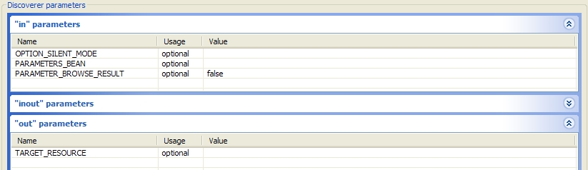
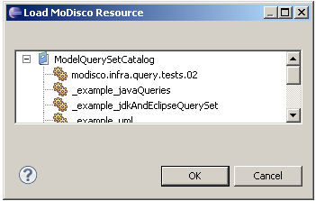
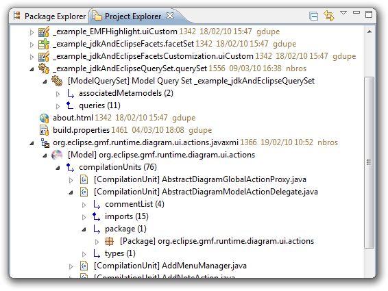
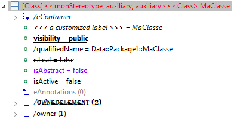
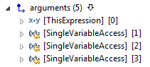
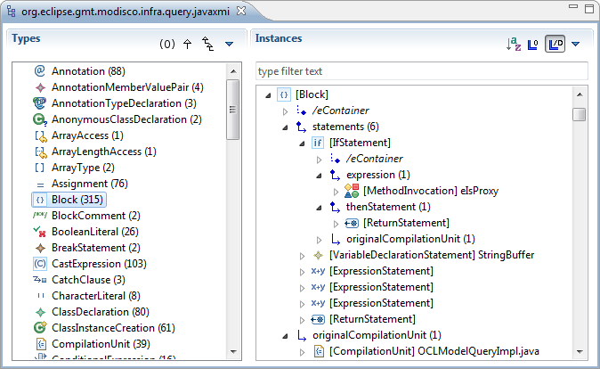
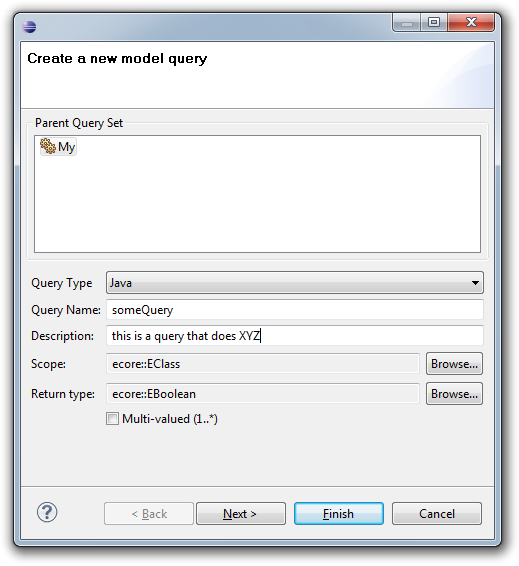
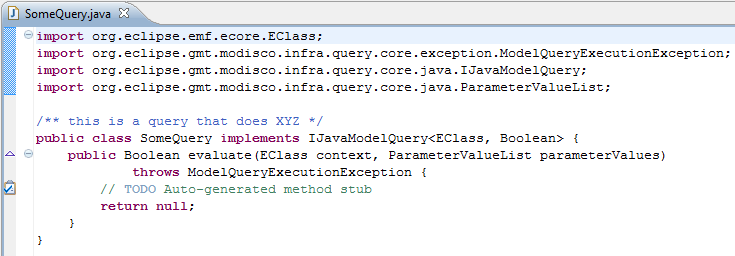
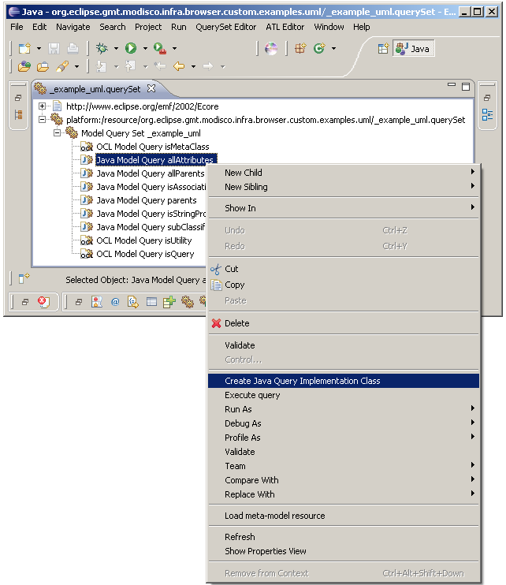

| 0.8 | ||
|---|---|---|
| Previous | Next | |
| 0.9 | 0.7 | |
We have added notion of discovery parameters in process. So it changes the api of Discoverer interface: method Resource discoverElement(Object source, URI target) is now deprecated and has been replaced by method void discoverElement(Object source, Map<DiscoveryParameter, Object> parameters). This new method is more generic and should be used in coordination with provided list of discovery parameters.
We provide also an abstract class AbstractDiscovererImpl to ease the development of new discoverers.
The launch configuration dedicated to discovery has been adapted to represent all discovery parameters and to edit their values (it only supports basic types, like primitive types and collections of Strings).

A MoDisco resource selection dialog is now available. This dialog avoids having to manually write the URI of the required resource (eg: "modisco:/query/myQuery").
To open this dialog, right-click and select Load MoDisco resource.
.
Extracted core functionality from the browser, so that it can be reused in other plug-ins (see UI Core). This makes it possible to embed model browsing functionality in any view. For example, plug-in infra.browser.uicore.examples.cnf demonstrates how to integrate the model browser in the Project Explorer (using the Common Navigator Framework) :

The browser is now extensively customizable through the use of uiCustom files:

These customizations can be easily created using a dedicated editor]:

The browser components are now fully internationalization ready.
Eclipse Forms look:

Less often used options are moved to a sub-menu in each toolbar so as to avoid cluttering the UI.


A pop-up menu action helping to create a Java model query implementation class is now available. To use it right-click on a JavaModelQuery and use Create Java Query Implementation Class.

With notion of discovery parameters, driver for discoverers has been updated to reflect new kind of parameters.
A "Java Generation" plug-in is available. The aim is to provide Java code generation from a Java model. Such a generation will participate to Legacy Refactoring & Migration chains.
Java Discovery parameters are completed with a Java filter field which allows to exclude some Java packages from discovery. This feature will be convenient when dealing with a large amount of Java source in one single Java project.
| Previous | Top | Next |
| 0.9 | 0.7 |